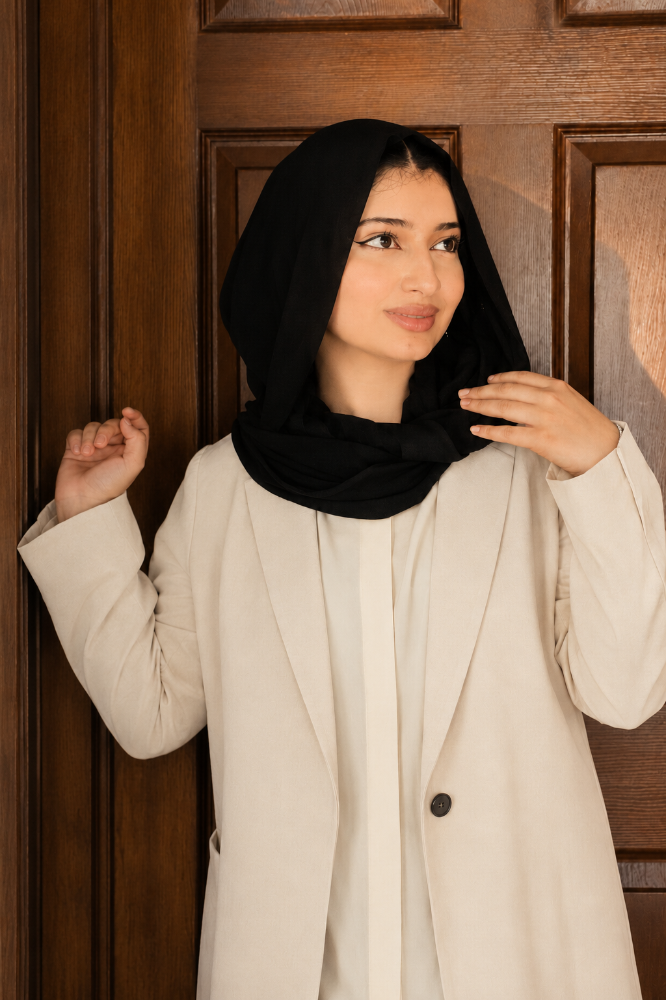

Pickwise
Seller trust, product comparison and a clearer checkout experience.
UI/UX Designer · Lahore, Pakistan
I’m Mariyam. I design websites and apps with a focus on clear structure, useful interactions and everyday needs.
Explore my work →Download CV ↓
01 / Selected work
A selection of client work, internship projects and independent design studies.
Seller trust, product comparison and a clearer checkout experience.

A connected experience for discovering courses and managing learning.


Guided strength and recovery sessions designed around one client’s needs.

Exploring category navigation and how buyers compare their options.
Visual systems / Internship exercise
A component-based nutrition website explored through three visual themes.
02 / About me
I’m a junior UI/UX designer based in Lahore, with experience through an internship, freelance work and independent projects.
Alongside design, I’m completing a BS in Biotechnology. My background in science and teaching has shaped how I approach research and communicate ideas.
I work from the problem to the flow, then refine the interface through feedback. I use Figma for design and prototyping, with AI tools supporting exploration and implementation where useful.
Get in touch
Open to junior UI/UX roles in Lahore and remote opportunities.
termezimariyam@gmail.com →